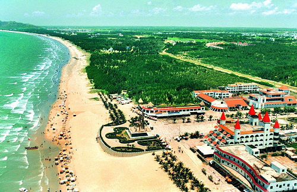
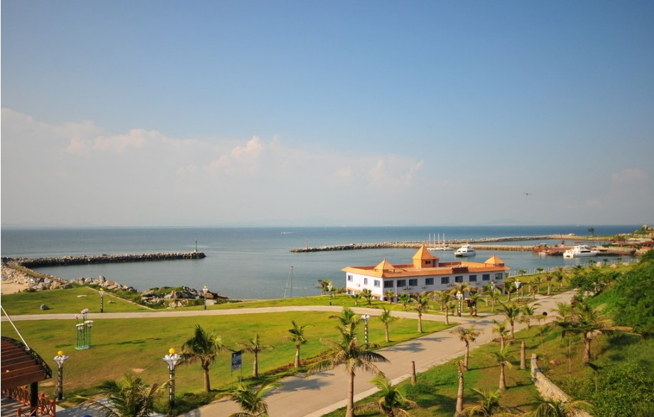
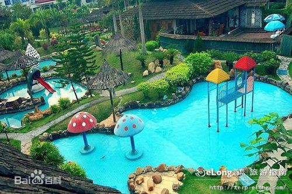
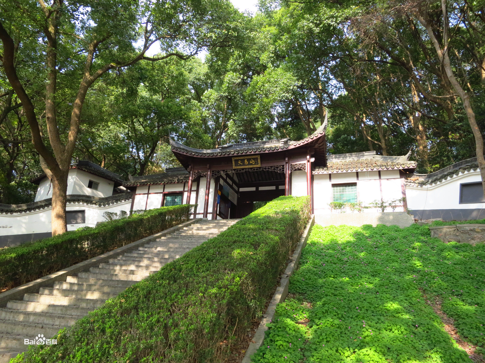
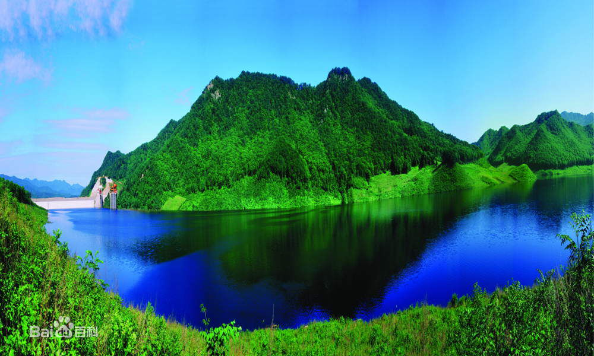
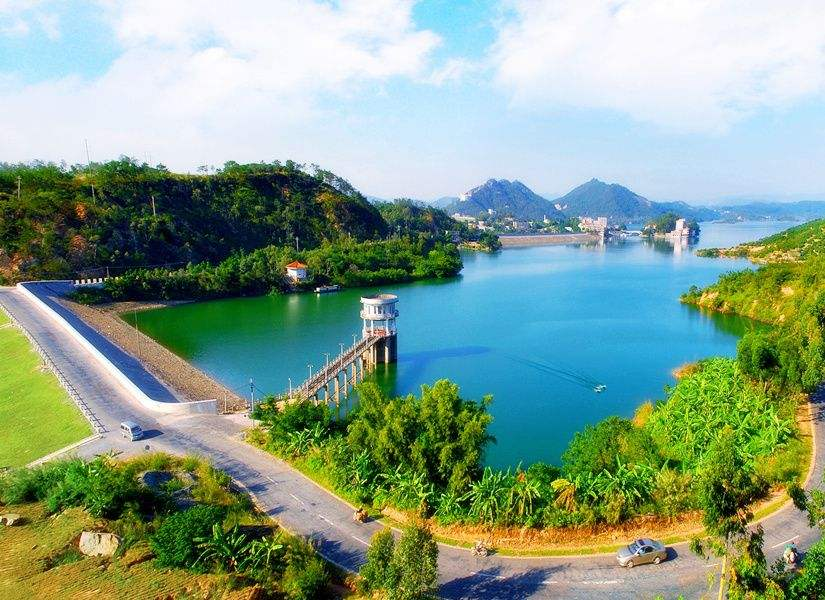
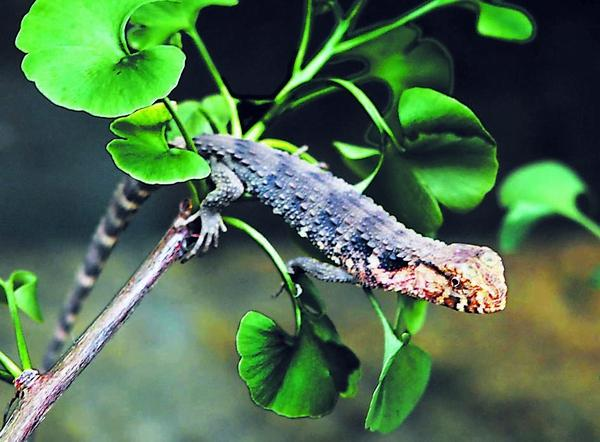
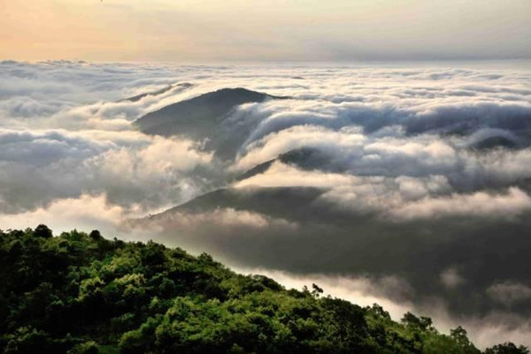

中国第一滩
中国第一滩旅游度假区位于广东省茂名市茂港区南海半岛，是水东湾省级旅游度假区的重要组成部分。开发建设始于1993年。区内被称作“绿色长城”的百里防护林带为我国第一条营造成功的沿海防护林带。国画大师关山月创作的悬挂在人民大会堂广东厅的巨幅国画《绿色长城》就取材于始。林带外长达十几公里的天然海滨浴场，坡度平缓，沙滩洁白，海水晶莹，一年四季均可畅游。是海水浴、日光浴的理想之所。距岸8海里的放鸡岛，岛上风光绮旎，美不胜收，周围海水清澈透明，能见度达8米，为我国著名的潜水旅游胜地。
放鸡岛
放鸡岛位于电白县水东镇东南14.5公里。原名汾洲山，又称湾舟山。岛上最高点高122米。面积1.9平方公里，是该县最大的海岛。传说神仙曾在此放牧群鸡，故设神庙以祀之。 后凡航海者过此，皆祀以生鸡，故名放鸡岛，又名湾舟，原名汾州山。据传海船到此必放一只鸡于岛上，以予放生祈求平安，故名放鸡岛。放鸡岛附近海域水深6-12米，能见度可达8米，是我国自然条件最好的潜水基地之一，不仅能见度高，而且附近海域没有暗涌，水静风轻，沙滩洁白，其条件适合开展浅水潜、深水潜、探险潜这三种目前国际流行的潜水运动。此外，岛上还有摩托艇、香蕉船、飞伞等游乐项。岛上既有自然景观资源，又有人文景观资源。自然景观有：岛景秀丽，石景多姿；沙滩、蚀洞、岩石、林木、阳光、海水，具全。东南部海域面临浩瀚南海，涛声如吼，常年浪击岛岸悬崖峭壁，雄伟坚挺，奇礁怪石遍布：景观形象丰富，势态逼真，唐代至今称奇景观有“南天飞石”“鸡海迥澜”“仙石听涛”“羊礁观日”“鲤鱼吐珠”“群石眠澜”。人文景观； “ 湾州寻古 ” “渔火闹汛”“灯耀南海”“群鸟翱翔”“白帆竞逐”“李陈庙祠”及有唐朝宰相李德被贬崖山的“湾州庙”遗址。
西江温泉度假村
西江温泉度假村座落于南国玉都——信宜市郊北界镇西江岸边，西江温泉故此得名，距市中心12公里，占地面积400亩，西江温泉度假村粤西新兴的集温泉理疗、旅业饮食、娱乐健身、旅游购物于一体的综合性旅游度假区。度假村四周群山起伏，层峦叠翠，风光秀丽，景色迷人，充满大自然的野趣。温泉水用作健身理疗治病，在我国有近千年的历史。西江温泉度假村的温泉有药物健身池、药物理疗池、健身泉酒池、牛奶美容池等。经广州分析测试中心检测，西江温泉的水质属广东最好，为国内罕有的珍稀温泉——氟泉。西江温泉水经广州分析测试中心分析检验，温泉水含有各种矿物质和微量元素达133mg以上，尤其是氟、偏硅酸和氡的含量分别比国家医疗矿泉水水质命名标准浓度高出6倍、2.5倍、2倍，可命名为氟水、硅水、氡水。因此，西江温泉有健身理疗治病的功效。
天马山自然风景区
天马山自然风景旅游区位于广东信宜市北界镇旺将村委会的西南边，距市区40多公里，是近几年才开辟以“大自然、真山水、纯生态”为特点的新旅游景区。并以湖光山色、古树老藤、溪流飞瀑、怪石奇立、高山草原、苗寨遗址之景点吸引游客。信宜人称这里是“香格里拉”、“世外桃源”。2007年被广东省评为最美丽的乡村之一，列为国家AAA级景点。深谷上段是一座天然的森林公园，古树野花品种繁多，珍稀树种有鸡毛松、观光木、红花荷、桫椤、人头蕨、伞花本、八角、半枫莆、艾波枫、勾桁、火力楠、猪笼杉等近百种，其中有—片面积500亩的八角林，四季翠绿，香飘数里。走进遮荫闭日的林间，无蚊虫咬之忧，呼吸浓香空气，令人七窍开通，提神醒脑，这里治疗鼻炎绝好去处。山边还有不少砂仁、巴戟、杜仲、山姜、当归、三杈苦、大朗伞、勾藤等名贵药材，林间有山猪、黄猄、果狸、箭猪、穿山甲、山龟、毛鸡等野生珍禽。形成了满目皆翠的绿色世界，据测，景区内每立方厘米拥有10万个负氧离子，是一个天然的大氧吧。置身其中，给人以“返朴归真，回归自然”的感受。森林公园上方有一个小山垌，一川平地，豁然开朗，三面环山，有一个小村落，叫做“小瑶寨”。可见梯田层层，果树成排。这里曾是瑶人聚居地方，留下古城墙，古堡遗址。更是日本兵败西逃，遭我军民袭击、损失惨重的地方，留下许多智斗日本兵的美丽动听的故事。
菠萝山森林公园
被联合国定为“人与生物圈”考察点的菠萝山森林公园（水土保持站），位于茂港区西部广湛公路旁，东距电白水东镇14公里，西距吴川市区18公里，总面积3.15平方公里，属热带北缘地区，土质为花岗岩风化而成的砖红壤。人工混交林风光旖旎。林、果交混，花卉满山，一年四季。繁花似锦，硕果累累，绿树成荫，花果飘香。同时，种有大叶相思、铁刀木、沙楞、白格等阔叶树和其它植物共320种，动物140多种，形成了一个层次植物和众多动物组成的生物群落，环境优雅：当游人进入此地，随时随处耳闻目睹大自然的美景，犹如进入人间仙境，乐趣无穷，1979年被选为国家十个森林生态系统定为研究站之一。
茂名玉湖
玉湖，湖水与山光、天色同碧，吹来轻风，飘来薄雾，绕着山，绕着轩榭和游人，此情此景，使人疑为蓬莱仙景；玉湖的山是连绵起伏的，娇媚得如彩点染。也许是水绿树绿的原因吧，风来松涛阵阵，绿浪无边。它与石骨大坝、良德大坝等八条泥龙连接，锁住了曹江和大井河，兜住了11.5亿立方米的水，形成一个闻名遐迩的人工湖——高州水库。山是大自然的造成物，湖是人创造的奇迹。每当细雨蒙蒙，那山犹如披着面纱的少女似的，能看到的是隐隐约约的秀气的脸蛋。面对这诱人的神韵，恐怕就连“江郎才尽”的诗人，也许会灵犀一点通，吟咏出令诗神也叹服的绝唱。
林洲顶鳄蜥省级自然保护区
广东茂名林洲顶鳄蜥省级自然保护区位于茂名市的东北部，地跨信宜市的思贺，新宝两镇，东接阳春百涌省级自然保护区，西南与鹿湖顶保护区相邻。林洲顶保护区生物资源丰富，目前已知区内分布有野生维管束植物1156种，其中国家重点保护植物桫椤、水蕨、紫荆木等7种；有昆虫资源12目71科208种；野生脊椎动物5纲27目85科225种，国家重点保护动物20种，其中国家Ⅰ级保护动物有鳄蜥、巨蜥、蟒蛇和云豹4种。保护区内植被呈较强的原生性、生态环境保持较好的自然性，保存有的天然次生常绿阔叶林面积超过总面积的一半，为西江流域一级支流罗定江以及思贺河、白龙河的发源地，既是粤西地区重要生态屏障和水源涵养林区，也是西江流域重要水源涵养林区，这对保护生态环境与保障水源具有极为重要的意义。更为重要的是，林洲顶有着目前全球最大的鳄蜥种群分布地，目前，保护区内野生鳄蜥种群约有1000多只，现已救护鳄蜥达200多只。保护区的成立对鳄蜥的生存、繁育和科研等有着重要的作用，从而可以产生巨大的生态效益、社会效益和经济效益。
大雾岭
大雾岭旅游区地处茂名市北部，离信宜城区38公里，地跨信宜、高州两地。大雾岭由云开山脉以及数十座海拔1000米以上的山峰组成，群山连绵不绝，高耸入云，其中海拔1500以上的山峰就有29座，是集生态保护、科学研究、旅游度假、高山疗养为一体的森林公园和自然保护区。大雾岭旅游区的主峰大田顶，号称粤西第一峰。如果说地势高挺的信宜是粤西的青藏高原，那么大雾岭就是粤西的喜马拉雅山山脉，而海拔1704米的大田顶则是粤西的珠穆朗玛峰了。相传离山顶不远处的东侧有一片平整的大田地，此峰因而得其名。